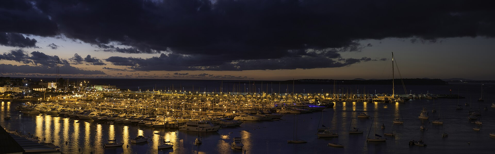
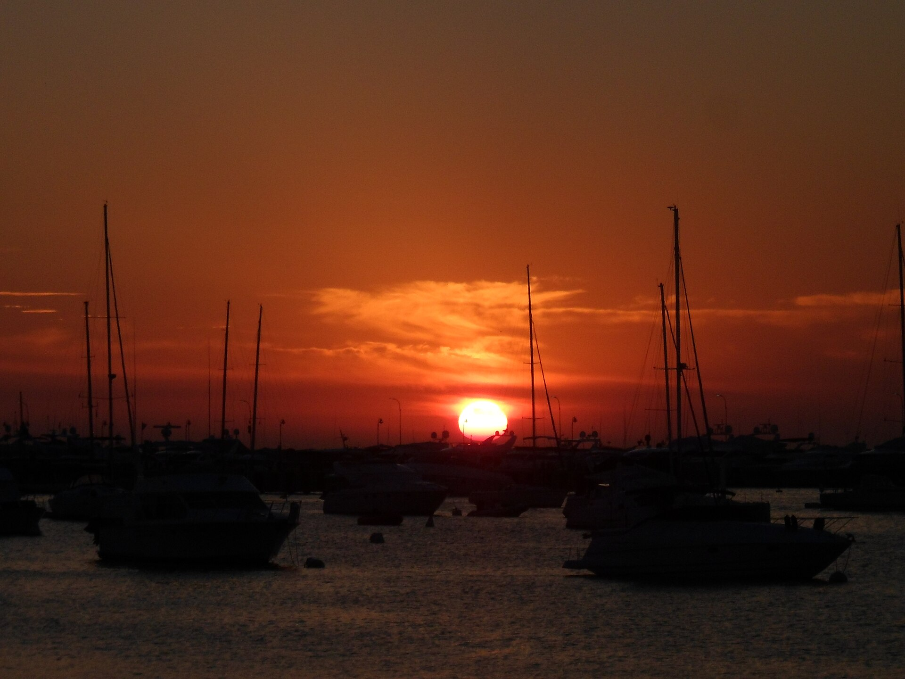
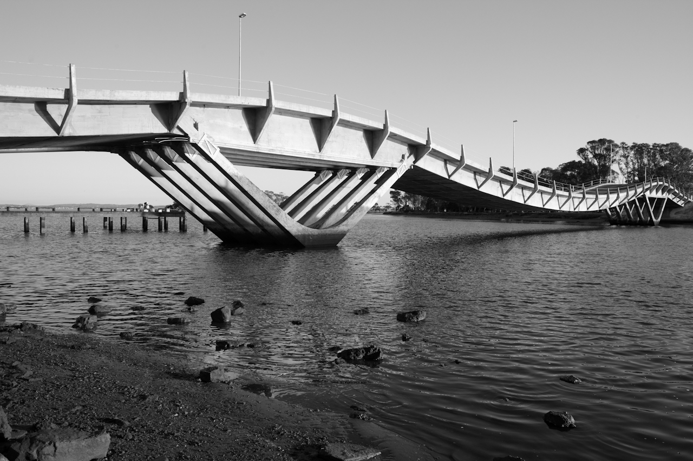

Puerto
Rambla del Puerto, Juan Díaz de Solís · Punta del Este
Sobre la rambla, con vista abierta al mar y a los barcos. El lugar para ver el atardecer.
Dos lugares para disfrutar sin apuro: sobre la rambla del Puerto de Punta del Este y en Ruta 10, La Barra. Desayunos, almuerzos, cenas y tragos.


Rambla del Puerto, Juan Díaz de Solís · Punta del Este
Sobre la rambla, con vista abierta al mar y a los barcos. El lugar para ver el atardecer.

Ruta 10 · La Barra, Maldonado
Más relajado, para un chivito, unos tacos y una limonada después de la playa.
Una muestra de la carta según lo que más comentan quienes nos visitan. La carta completa, con precios, te espera en la mesa.
“Vista” y “atardeceres” son las palabras que más se repiten en nuestras reseñas.
“Excelente lugar, una ubicación privilegiada, sobre la rambla, excelentes vistas. El servicio muy bueno, siempre atentos. Muy bien servida la comida, fresca. Súper rica.”
“Un lugar al que siempre volvemos y nunca falla! Ideal para ir con la familia a disfrutar una linda noche o también para desayunar. La vista es simplemente hermosa.”
“La ambientación muy bonita. La comida riquísima y la atención rápida y genial, todos muy buena onda. Pedimos rabas, dos variedades de chivitos y tacos veggie.”
Escribinos por WhatsApp al local que prefieras y te guardamos lugar.